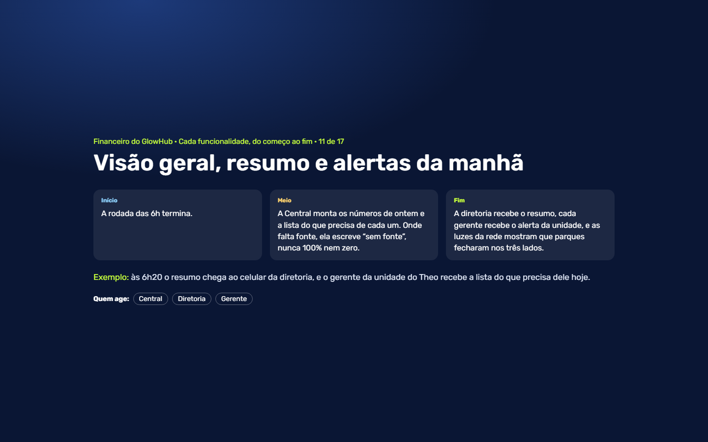
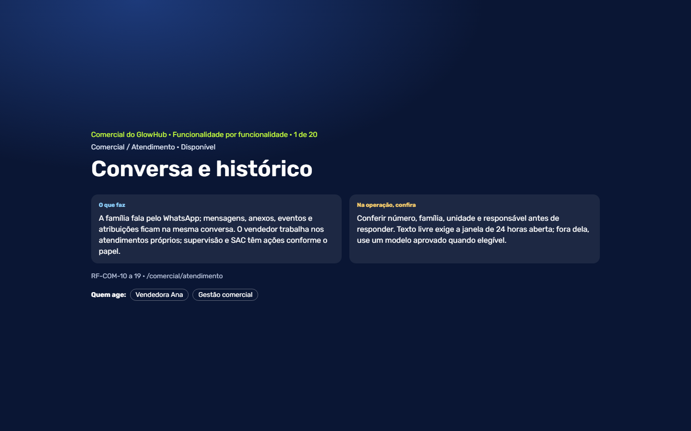
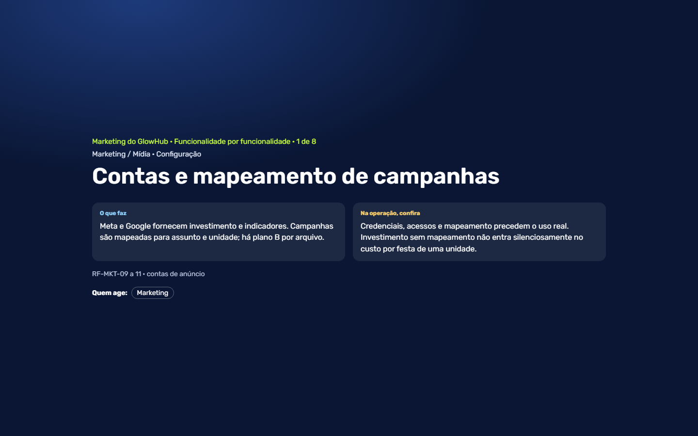

17 capítulos · 28 minutos
Financeiro, cada funcionalidade do começo ao fim
A venda e o ERPFLEX, os pagamentos, o PIX, os recebíveis, as festas, as devoluções, as tratativas, as taxas e o que a Central faz sozinha.
AssistirGlowHub
O GlowHub nas telas de verdade. Cada jornada é um vídeo em capítulos: cada pessoa entra com o próprio login, clica e preenche, e a legenda diz em que ponto da história estamos.

17 capítulos · 28 minutos
A venda e o ERPFLEX, os pagamentos, o PIX, os recebíveis, as festas, as devoluções, as tratativas, as taxas e o que a Central faz sozinha.
Assistir
20 capítulos · 20 minutos
O atendimento no WhatsApp, as filas e a distribuição, a oportunidade, a agenda e a pré-reserva, o link do sinal, o painel, a comissão e o vendedor IA.
Assistir
8 capítulos · 7 minutos
As contas de anúncio, o painel das campanhas, a base de clientes, a régua de aniversariantes, os horários vazios, a reativação, as indicações e os convidados.
Assistir